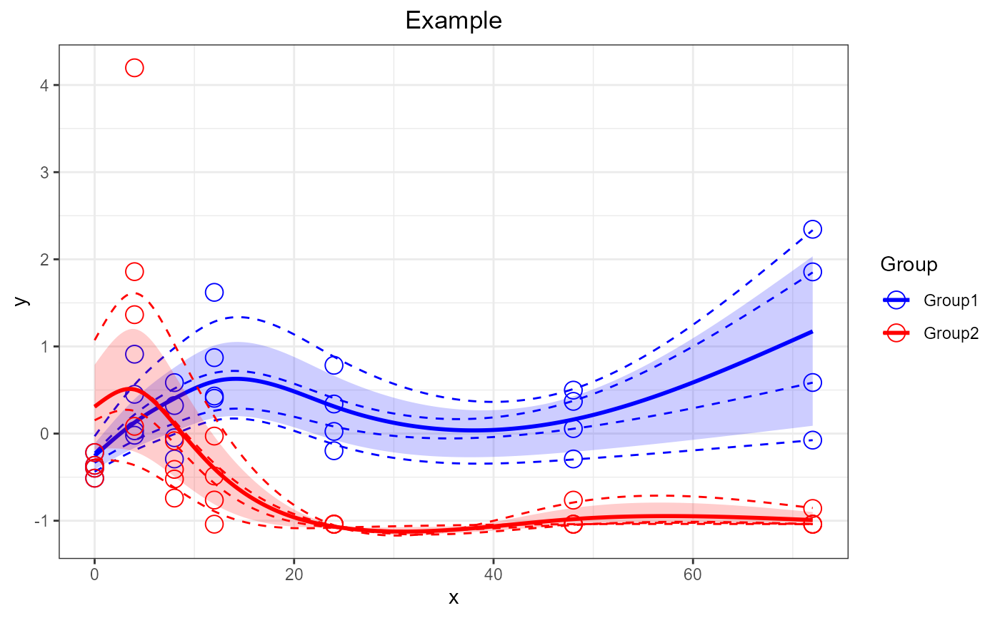

Plot a SANTAObj generated by santaR_fit. Returns a ggplot2 plotObject that can be further modified using ggplot2 grammar.
santaR_plot(
SANTAObj,
title = "",
legend = TRUE,
showIndPoint = TRUE,
showIndCurve = TRUE,
showGroupMeanCurve = TRUE,
showTotalMeanCurve = FALSE,
showConfBand = TRUE,
colorVect = NA,
sampling = 250,
xlab = "x",
ylab = "y",
shortInd = FALSE
)A fitted SANTAObj as generated by santaR_fit.
(str) A plot title. The default title is empty.
(bool) If TRUE a legend panel is added to the right. Default is TRUE. Note: the legend cannot be generated if only the Confidence Bands or the Total Mean Curve are plotted.
(bool) If TRUE plot each input measurements (in group color). Default is TRUE.
(bool) If TRUE plot each individual's curve (in group color). Default is TRUE.
(bool) If TRUE plot the mean curve for each group (in group color). Default is TRUE.
(bool) If TRUE plot the mean curve across all measurements and groups (in grey). Default is FALSE.
If TRUE plot the confidence bands calculated with santaR_CBand.
Vector of ggplot2 colors. The number of colors must match the number of groups (ex:colorVect=c("deepskyblue","red")).
(int) Number of data points to use when plotting each spline (sub-sampling). Default is 250.
(str) x-axis label. Default is 'x'.
(str) y-axis label. Default is 'y'.
if TRUE individual trajectories are only plotted on the range on which they are defined. Default is FALSE.
A ggplot2plotObject.
Other Analysis:
get_grouping(),
get_ind_time_matrix(),
santaR_CBand(),
santaR_auto_fit(),
santaR_auto_summary(),
santaR_fit(),
santaR_pvalue_dist(),
santaR_pvalue_fit(),
santaR_start_GUI()
Other AutoProcess:
santaR_auto_fit(),
santaR_auto_summary(),
santaR_start_GUI()
## 56 measurements, 8 subjects, 7 unique time-points
Yi <- acuteInflammation$data$var_3
ind <- acuteInflammation$meta$ind
time <- acuteInflammation$meta$time
group <- acuteInflammation$meta$group
grouping <- get_grouping(ind, group)
inputMatrix <- get_ind_time_matrix(Yi, ind, time)
SANTAObj <- santaR_fit(inputMatrix, df=5, grouping=grouping, verbose=TRUE)
SANTAObj <- santaR_CBand(SANTAObj, nBoot=100)
p <- santaR_plot(SANTAObj, title='Example')
print(p)
